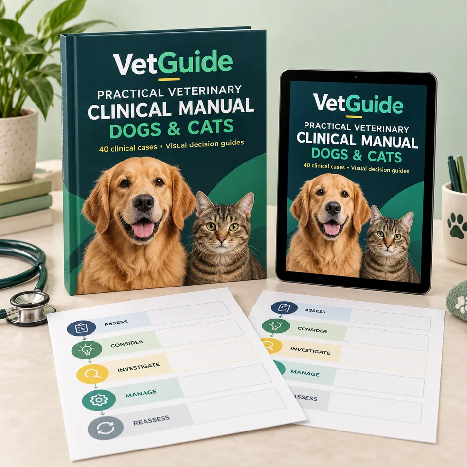
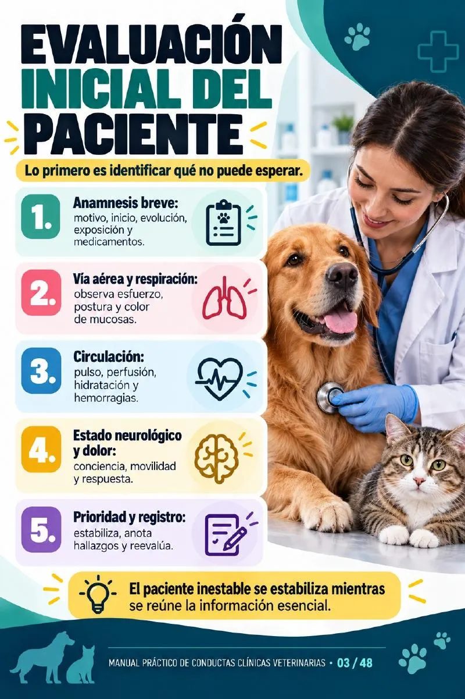

Assess the patient
Start with the presentation, history and findings that need priority.
A CLEARER WAY TO STUDY CLINICAL DECISIONS
From symptoms to a clinical plan. For dogs & cats.

40 clinical cases, visual decision guides and practical checklists to help you organize your reasoning, recognize warning signs and review the next steps.
EXPLORE THE MANUALCurrent manual edition: Spanish · This page is in English
WHEN THE SYMPTOMS ARE CLEAR, BUT THE NEXT STEP ISN’T
A vomiting dog. A cat that has stopped eating. A patient with pale gums. Reviewing a case means putting the history, findings and warning signs together.
This manual gives your study a repeatable structure: assess, consider, investigate, manage and reassess.
A FRAMEWORK YOU CAN FOLLOW
Each case follows the same visual structure, so you know where to look.
Review the presentation. Organize the questions. Connect the findings.
Illustration of the layout · Original PDF is in Spanish
Start with the presentation, history and findings that need priority.
Connect the signs with relevant differential diagnoses.
Understand how examination and diagnostic testing inform decisions.
Review the approach in the context of the patient’s findings.
Keep monitoring, response and follow-up in the reasoning process.
LOOK INSIDE BEFORE YOU DECIDE
Browse real pages from the supplied manual. Select a page to enlarge it.
Original Spanish edition shown below. English section titles are provided for navigation.
Selected pages from the 48-page manual · Digital PDF
BUILT AROUND THE PRESENTING PROBLEM
Review canine and feline cases across common clinical presentations.
Vomiting, diarrhea, appetite changes and abdominal presentations.
CONNECT SIGNS & FINDINGSRespiratory signs, assessment priorities and urgent presentations.
RECOGNIZE PRIORITIESUrinary changes, blood in the urine and obstruction concerns.
REVIEW THE APPROACHPruritus, skin lesions and a structured investigation of possible causes.
ORGANIZE THE WORKUPLameness, pain, mobility changes and functional assessment.
CONNECT PAIN & FUNCTIONWarning signs, initial priorities and emergency decision guides.
RECOGNIZE RED FLAGSMORE THAN CASE SUMMARIES
Return to the core steps when reviewing assessment, triage and follow-up.
A visual framework for reviewing emergency priorities and reassessment.
A dedicated page bringing important warning signs together by presentation.
A structured reminder of observation, history, assessment and planning.
FROM THE CLASSROOM TO CASE DISCUSSIONS
An educational reference for reviewing how the pieces of a case fit together.
Connect your coursework with case-based study and discussion.
Review assessment frameworks as you build your clinical experience.
Use the visual structure to support review and case discussions.

Open the PDF on your phone, tablet or computer, or print the pages you want to review.
YOUR CLINICAL STUDY COMPANION
Review cases, revisit the framework and keep the reference tools close.
PRACTICAL VETERINARY CLINICAL MANUAL
Sales are not open yet.
Educational reference for veterinary students and professionals. Supports study and case review; clinical decisions require professional judgment and current local guidance.
A SIMPLE WAY TO USE IT
Start with the clinical situation you want to review.
Connect assessment, possibilities, investigations and management.
Revisit the case, compare your reasoning and use the reference tools.
FREQUENTLY ASKED QUESTIONS
A 48-page digital manual featuring 40 clinical cases for dogs and cats, a five-step case framework, an emergency decision guide, a warning signs table and a rapid assessment checklist.
The supplied manual is currently in Spanish. This website and its explanatory summaries are in English. The English cover is a promotional mockup, not an English edition of the PDF. An English translation is not included at this stage.
No. The product is a digital PDF. The book and device mockups illustrate how the material can be used; no printed book or device is shipped.
Yes. The PDF can be opened with a compatible PDF reader on a phone, tablet or computer. You can also print pages for personal study.
Veterinary students, recent graduates and practicing veterinarians who want a visual resource for study and case review. It is not a home-treatment guide for pet owners.
No. It is an educational reference. It does not replace patient examination, professional judgment, supervision, current drug references or local veterinary protocols.
Sales are not open yet. Pricing, payment and delivery details will be displayed when the offer becomes available.
LESS SCATTERED INFORMATION. MORE STRUCTURE.
40 cases. Two species. One practical clinical manual.
EXPLORE THE MANUALDigital PDF · Current edition: Spanish